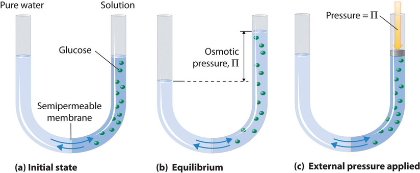
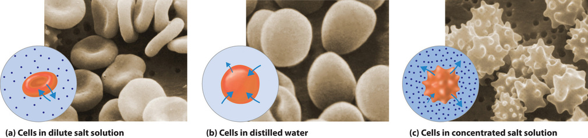
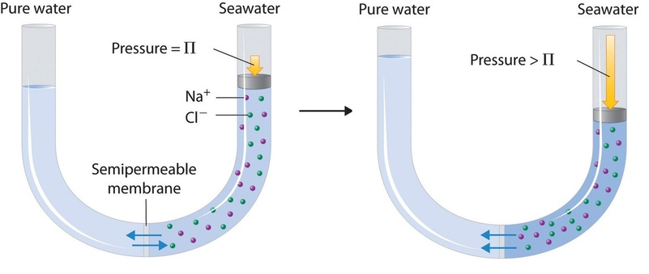

Osmotic Pressure
Contents
This page was generated from notebooks/L4/1_Osmotic_Pressure.ipynb.


Osmotic Pressure#
The chemical potential as defined in the previous section also allows us to understand the osmotic pressure. Consider a volume that is seperated into two equally sized parts by a semipermeable membrane. One of the compartments is filled with pure water, the other compartment contains a number of additional solute molecules. The solute molecules thereby cannot pass the membrane while the water can easily pass it.
The chemical potential of the water
needs to be the same on both sides.
The chemical potential on the solute side is given by
and on the solvent side
from which follows that
Here we have already assumed that on both sides of the membrane we have a different pressure (\(p_1\neq p_2\)). If both pressures are only slightly different we can write
which is just a Taylor expansion. It turns out, that the derivative
is nothing else than the volume occupied by one molecule. Inserting the Taylor expansion into the original equality of the chemical potentials, we find
\begin{equation} p_2-p_1=\frac{N_{\rm s}}{v N_{\rm H_2O}} k_{\rm B} T. \end{equation}
With \(V=v N_{\rm H_2O}\) as the toral volume of water we have
\begin{equation} \Pi =p_2-p_1=\frac{N_{\rm s}}{V}k_{\rm B} T = n_{\rm s}k_{\rm B} T \end{equation}
which is the van’t Hoff formula for the osmotic pressure.
Osmotic Pressure
The van’t Hoff formula for the osmotic pressure is
\begin{equation} \Pi = n_{\rm s}k_{\rm B} T \end{equation}
where \(n\) is the number density of suspended objects and $k_B T $ is the thermal energy.
Note that the equation looks very much like the equation of state of the ideal gas, however, the pressure is not generated by the collisions of the solute molecules with the membrane. The pressure is generated by the water molecules which try to dilute the solute molecules.
Image taken from chemistry libre texts
The concept of osmotic pressures play a very important role in soft matter physics, biology but also environmental science.
Shape of red blood cells#
One particular and often mentioned example of the importance of osmotic pressure is the shape of red blood cells.
Image taken from chemistry libre texts
Reverse Osmosis#
A second very important application for osmosis is actually reverse osmosis. Reverse osmosis is heavily employed for water desalination. Salt water is pumped through a membrane, which is selectively preventing ions from passing the membrane. Due to the osmotic pressure difference between the salt free and the salty regions, high pressures are required to pump the water through these membranes. Yet, the technical realizations of this method come close to the thermodynamic limit of this process.
Image taken from chemistry libre texts